Freigegeben · im Spiel integriertSpaceTrader
Gemalte Weltraumgrafiken
Comic-Sci-Fi im Stil der vorhandenen Schiffe und Planetenoberflächen. Die Planeten sind ohne blauen Leuchtring gestaltet. Die Ruinenwelt erhält sechs Ansichten mit zunehmend mehr Häusern und Infrastruktur; sie ersetzen jetzt die bisherigen Gebäudemarkierungen auf der Weltraumkarte.
Diese Tafeln zeigen die freigegebenen Entwürfe. Die transparenten Einzelgrafiken sind inzwischen ins Spiel integriert. Bilder anklicken, um sie in voller Größe zu öffnen. Browseransichten der fertigen Umsetzung öffnen.
01 · Planeten I – ohne Leuchtring
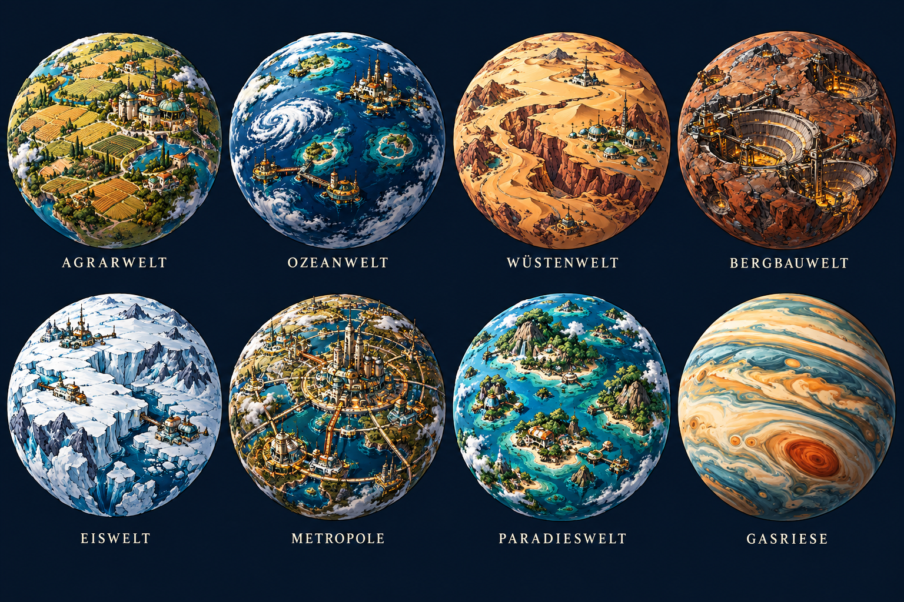
01-planeten-lebendig-v2.png · Entwurf zur Abnahme
02 · Planeten II – ohne Leuchtring
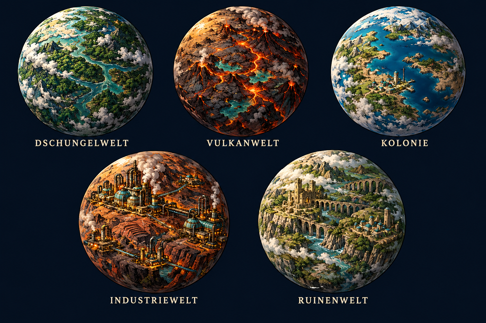
02-planeten-heimat-v2.png · Entwurf zur Abnahme
03 · Werften, Handel und Wohnen
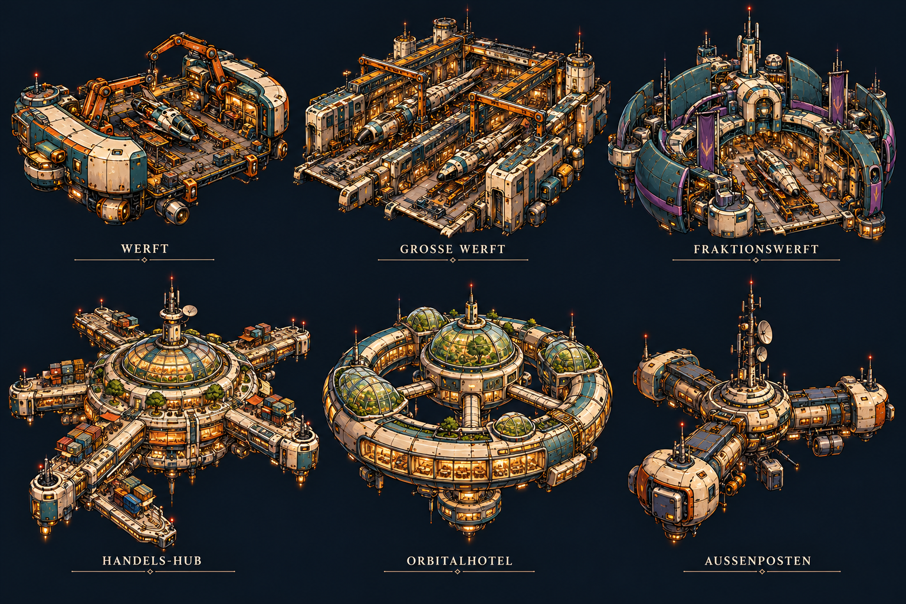
03-stationen-haefen.png · Entwurf zur Abnahme
04 · Spezialstationen und Fundstellen
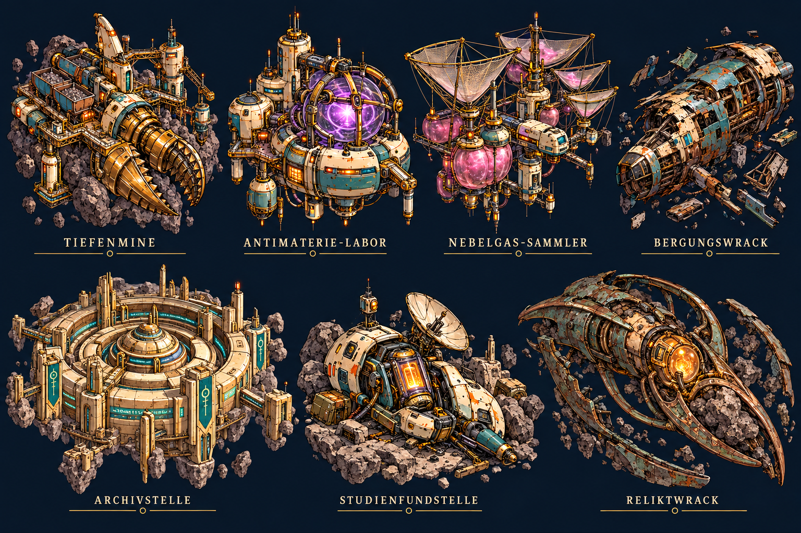
04-stationen-fundstellen.png · Entwurf zur Abnahme
05 · Ruinenwelt – sechs Ausbaustufen
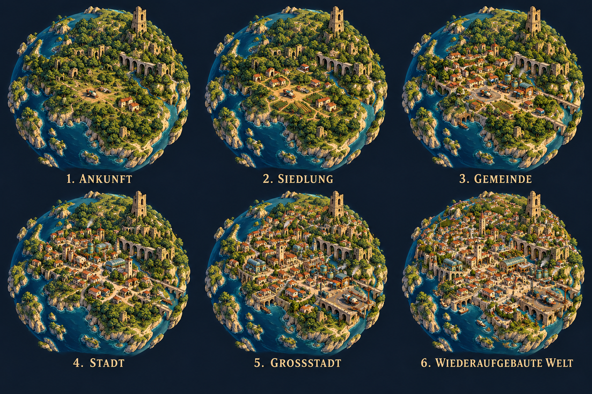
05-ruinenwelt-progression.png · Entwurf zur Abnahme
06 · Produktion I – Grundstoffe
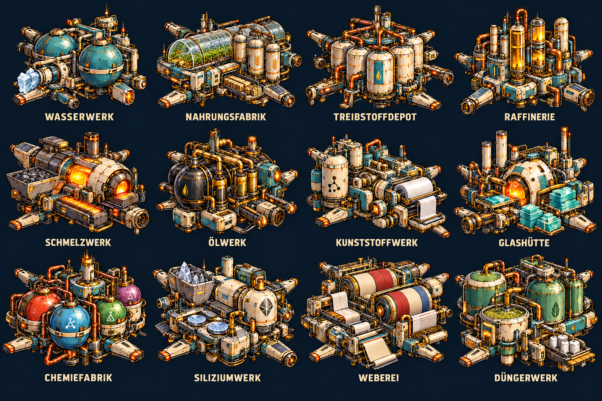
06-produktion-grundstoffe.png · Entwurf zur Abnahme
07 · Produktion II – Materialien
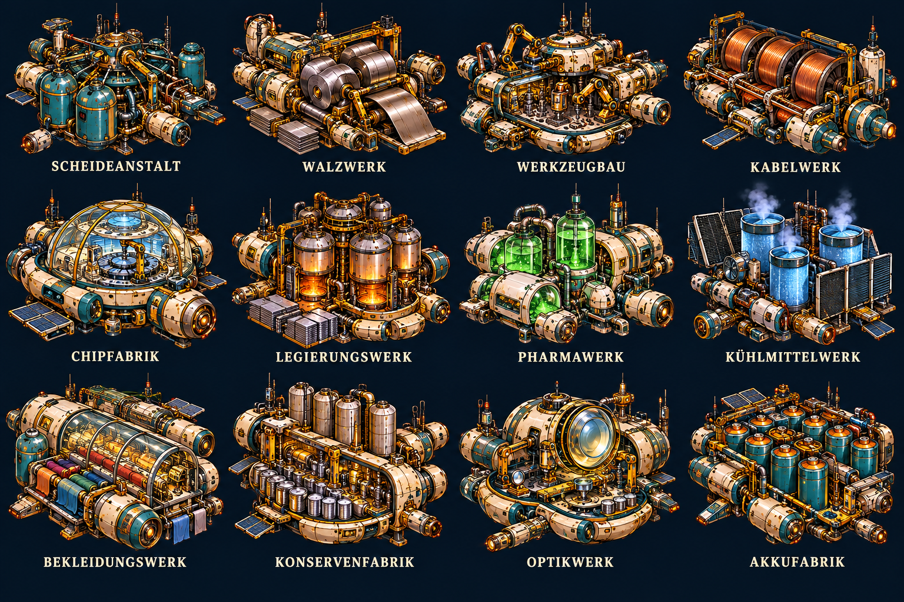
07-produktion-materialien.png · Entwurf zur Abnahme
08 · Produktion III – Technik
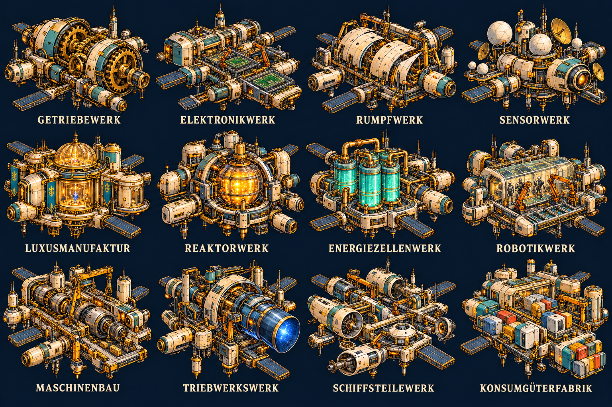
08-produktion-technik.png · Entwurf zur Abnahme
09 · Produktion IV – Hochtechnologie
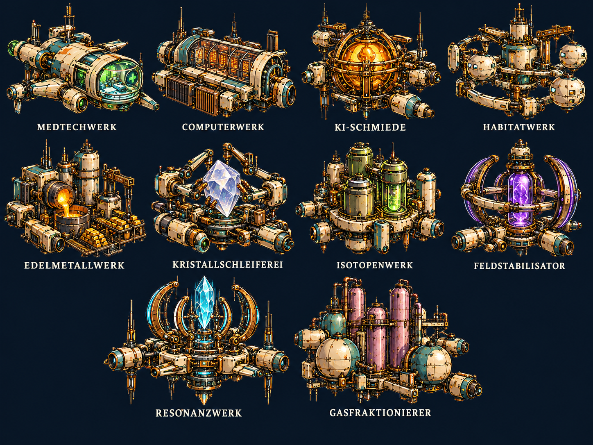
09-produktion-hochtechnologie.png · Entwurf zur Abnahme
10 · Alle Ressourcenfelder
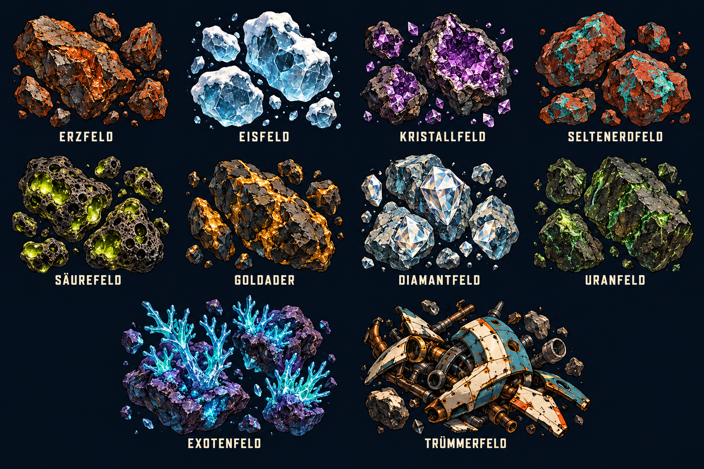
10-ressourcenfelder.png · Entwurf zur Abnahme
11 · Sechs Sonnenfarben
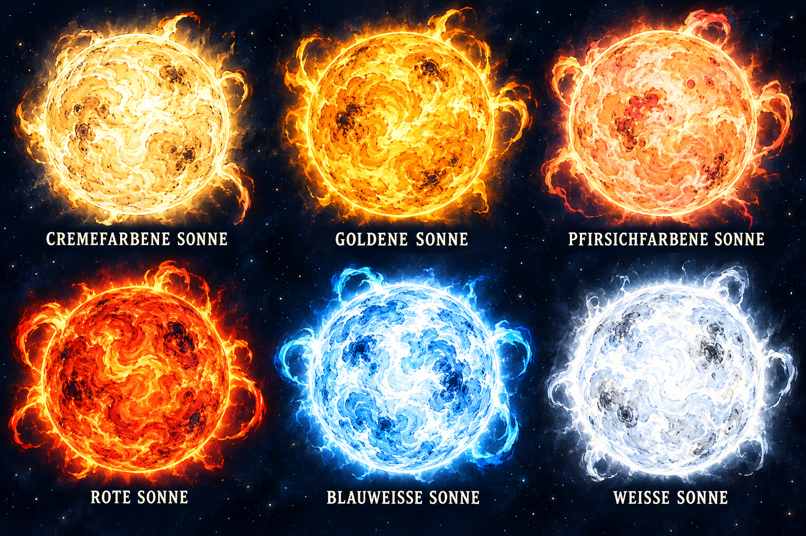
11-sonnen.png · Entwurf zur Abnahme
12 · Schwarze Löcher und Wurmloch
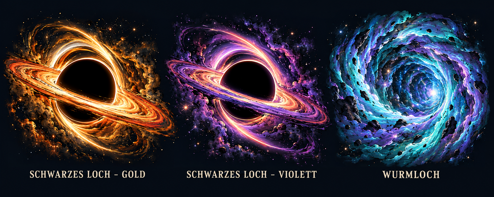
12-schwarze-loecher-wurmloch.png · Entwurf zur Abnahme
13 · Fünf Weltraumzonen
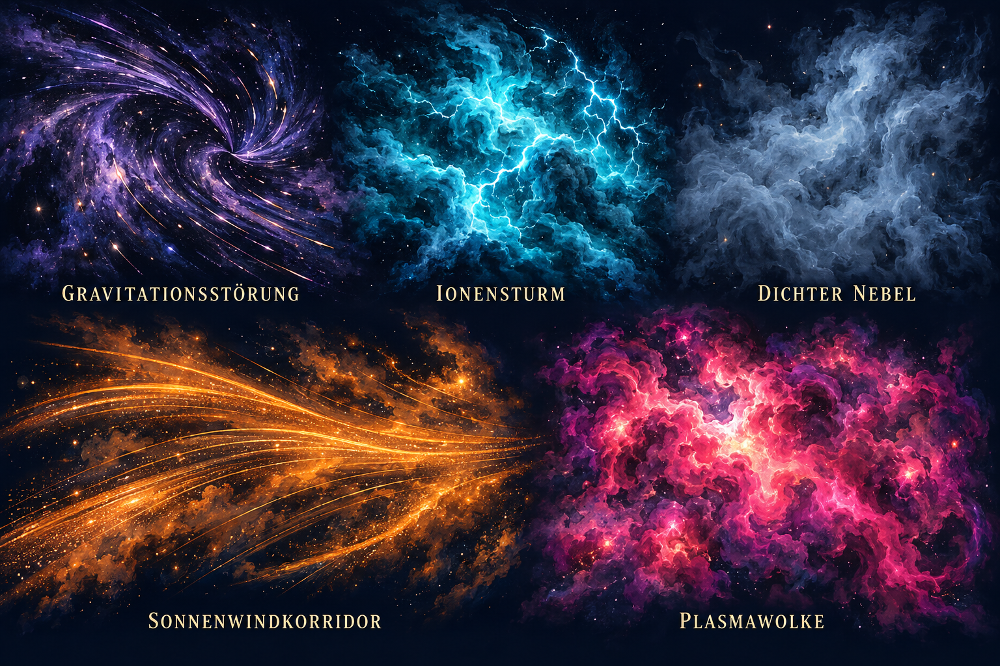
13-weltraumzonen.png · Entwurf zur Abnahme
14 · Weltraumhintergrund – Teal
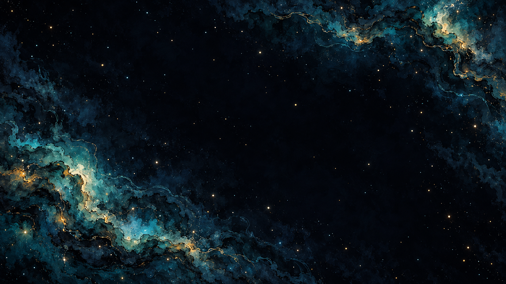
14-weltraum-hintergrund-teal.png · Entwurf zur Abnahme
15 · Weltraumhintergrund – Violett
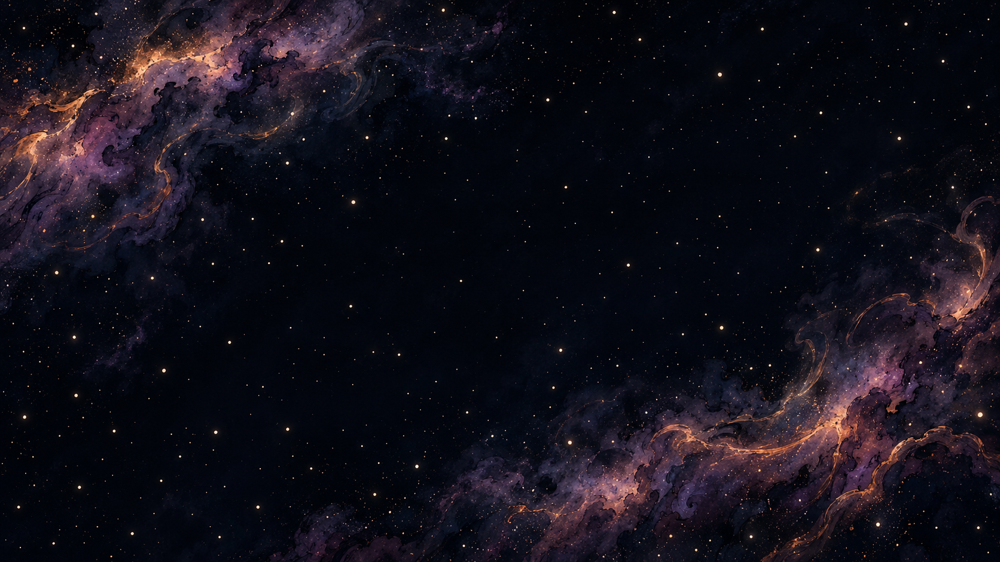
15-weltraum-hintergrund-violett.png · Entwurf zur Abnahme
Erzeugt mit dem eingebauten ImageGen. Vollständige Prompts · PRD und Freigabestand